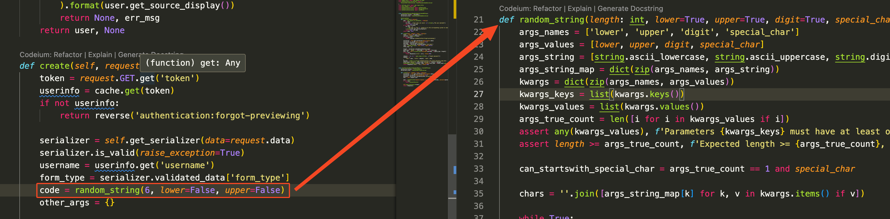
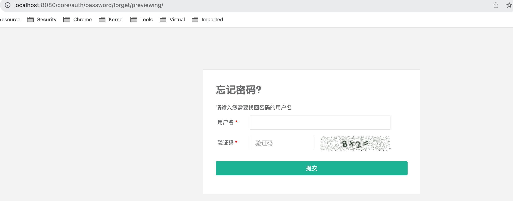
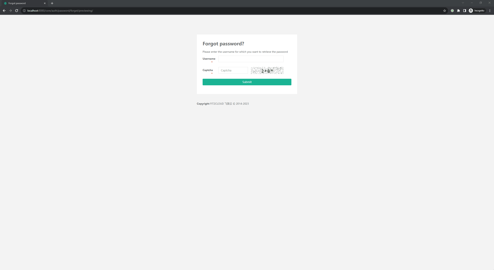

漏洞的根本原因是由于使用了不够安全的 rand 方法，当 seed 固定时，攻击者可以推测出通过该 seed 生成的随机数，从而推断出验证码。
漏洞分析
伪随机数的安全性
JumperServer 使用如下函数生成随机字符串，使用它作为重置密码的验证码『正常的业务逻辑，会将该验证码发送至用户的邮箱』
代码文件路径
apps/common/utils/random.py
def random_string(length: int, lower=True, upper=True, digit=True, special_char=False):
args_names = ['lower', 'upper', 'digit', 'special_char']
args_values = [lower, upper, digit, special_char]
args_string = [string.ascii_lowercase, string.ascii_uppercase, string.digits, string_punctuation]
args_string_map = dict(zip(args_names, args_string))
kwargs = dict(zip(args_names, args_values))
kwargs_keys = list(kwargs.keys())
kwargs_values = list(kwargs.values())
args_true_count = len([i for i in kwargs_values if i])
assert any(kwargs_values), f'Parameters {kwargs_keys} must have at least one `True`'
assert length >= args_true_count, f'Expected length >= {args_true_count}, bug got {length}'
can_startswith_special_char = args_true_count == 1 and special_char
chars = ''.join([args_string_map[k] for k, v in kwargs.items() if v])
while True:
password = list(random.choice(chars) for i in range(length))
for k, v in kwargs.items():
if v and not (set(password) & set(args_string_map[k])):
# 没有包含指定的字符, retry
break
else:
if not can_startswith_special_char and password[0] in args_string_map['special_char']:
# 首位不能为特殊字符, retry
continue
else:
# 满足要求终止 while 循环
break
password = ''.join(password)
return password而这里使用的随机数种子，是用户可获得的，并且由于使用的是 python 中的 random.seed 函数，导致当 seed 相同时，生成的随机数序列也是相同的。Python 官方文档给出了如下提示，推荐使用 secrets 模块代替『需要 python 3.6 以上』
Warning The pseudo-random generators of this module should not be used for security purposes. For security or cryptographic uses, see the secrets module.
下面对这个方法做一个简单的测试
nop_random函数摘抄自vulhub项目，不清楚为什么要做这一步，而不是直接使用random.seed(seed)
def random_string(length: int, lower=True, upper=True, digit=True, special_char=False):
...
def nop_random(seed: str):
random.seed(seed)
for i in range(4):
random.randrange(-35, 35)
for p in range(int(180 * 38 * 0.1)):
random.randint(0, 180)
random.randint(0, 38)
if __name__ == "__main__":
nop_random("123456")
for i in range(4):
code = random_string(6, lower=False, upper=False)
logging.info("your code is %s", code)重复执行上述代码 2 次，会发生得到的结果是相同的，如下所示。
2023-10-09 17:25:42,346 - INFO - your code is 693489
2023-10-09 17:25:42,346 - INFO - your code is 672691
2023-10-09 17:25:42,346 - INFO - your code is 282104
2023-10-09 17:25:42,346 - INFO - your code is 321187这意味着只要知道 seed，就可以推断随机序列。
种子泄露
seed 是怎么泄露的呢？攻击者需要首先获取 seed 才能进行推断操作。而这得从 django-simple-captcha 库说起，JumperServer 使用 django-simple-captcha 作为验证码的生成库。
P 牛在他的 文章 中介绍了生成验证码的大致过程：
- 为验证码生成
challenge『验证字符串』 和response『答案』 - 根据
challenge和response生成一个hash key django-simple-captcha内部会根据这个hash key对验证字符串图片进行变异，并将图片与hash key关联- 用户在前端页面可以获取该图片的链接『形如
http://127.0.0.1:8000/captcha/image/7971533e468df419e9bdd7e8e09b8ae2388e97ef/』，其中就包含了这个hash key，例如7971533e468df419e9bdd7e8e09b8ae2388e97ef
django-simple-captcha 的作者使用 random.seed(seed) 方法固定种子的目的是为了确保同一对 challenge 和 response 生成的验证码图片相同。仅从验证码生成的角度看这没有问题，但不幸的是 JumperServer 中使用了这个 hash key 来生成后续的验证码，见下图
代码路径
apps/authentication/api/password.py

漏洞利用
通过前面的分析可以了解漏洞的利用步骤，访问忘记密码页面，会生成验证码图片，图片的链接会泄露 hash key，也就是 seed。

输入验证码后点击提交就会触发下一步邮箱验证码的生成，此时可通过前面获取的 seed 在本地推断生成验证码，之后提交即可。
但是 JumperServer 内部使用了负载均衡和多线程来处理访问请求，不同的线程之间种子可能不同。如果前面访问的两个页面是由不同线程处理的就会利用失败，为此需要让所有线程的种子相同，怎么做呢？
前面提到可通过 /captcha/image/<hash key>/ 访问 django-simple-captcha 生成的图片，而对应的函数如下
def captcha_image(request, key, scale=1):
if scale == 2 and not settings.CAPTCHA_2X_IMAGE:
raise Http404
try:
store = CaptchaStore.objects.get(hashkey=key)
except CaptchaStore.DoesNotExist:
# HTTP 410 Gone status so that crawlers don't index these expired urls.
return HttpResponse(status=410)
random.seed(key) # Do not generate different images for the same key
# ...其中会调用 random.seed(key) 设置种子，而 key 是可控的。那么只要高频重复的访问 /captcha/image/<hash key>/ 就有机会让所有线程的种子相同。
漏洞复现
P 牛已经在 vulhub 中提供了开箱即用的环境，按照以下步骤即可复现：
docker compose up启动环境- 访问 http://localhost:8080
- 点击忘记密码，右键在新标签页打开验证码图片『刷新忘记密码也面知道验证码图片中不包含数字
10』，复制其中的hash key - 刷新一次上一步中的忘记密码页面，目的是避免在进入邮箱验证码页面前使用上一个验证码图片的
hash key来生成邮箱验证码，因为一旦输入了正确的验证码图片的答案，对应的 hash key 也就消失了『邮箱验证码通过调用/api/v1/authentication/password/reset-code/?token=生成』。 - 输入用户名
admin和验证码答案，进入下一个邮箱验证码的页面http://localhost:8080/core/auth/password/forgot/?token=sceOx7yWuAH9wWcuzc0nMQmLBzEPNhkhuTfl - 复制
url中的token - 使用
token和前面获取的hash key，执行python poc.py -t http://localhost:8080 --email admin@mycomany.com --seed [seed] --token [token]
复现过程如下图

疑问
vulhub 上提到如果验证码图片中包含数字 10 则无法利用。
参考
- https://paper.seebug.org/3043/#cve-2023-42820 『
Phith0n的分析文章』 - https://github.com/mbi/django-simple-captcha/pull/221 『
django-simple-captcha修复详情』 - https://django-simple-captcha.readthedocs.io/en/latest/ 『
django-simple-captcha文档』